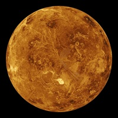
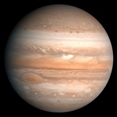
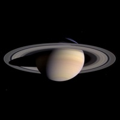

| Venus | Mars | Jupiter | Saturn | |
|---|---|---|---|---|
| Images of Cool Planets |  |
 |
 |
|
| Mass (10^24kg) | 4.87 | 0.642 | 1898 | 568 |
| Diameter (km) | 12,104 | 6792 | 142,984 | 120,536 |
| Density (kg/m^3) | 5243 | 3934 | 1326 | 687 |
| Gravity (m/s^2) | 8.9 | 3.7 | 23.1 | 9.0 |
| Escape Velocity (km/s) | 10.4 | 5.0 | 59.5 | 35.5 |
| Distance from Sun (10^6 km) | 108.2 | 228.0 | 778.5 | 1432.0 |
| Orbital Period (days) | 224.7 | 687.0 | 4331 | 10,747 |